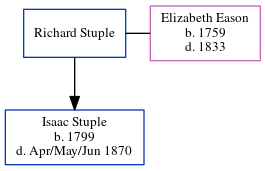

Elizabeth Stuple (née Eason) 1759 - 1833
[ Home ] | [ Calendar ] | [ Surnames Index ] | [ Errors ] | [ Family History ]Elizabeth Eason, the 4 times great-grandmother of Nigel Horne, was born in 17591,2 and married Richard Stuple (with whom she had 1 child, Isaac) at St. Mary's, Reculver, Kent, England on 12 Oct 17993 (Widow).
She died in 1833 in Herne, Kent, England1 and was buried there at St Martin on 14 Apr 18334.
Children
- Isaac was born in 1799
Citations
- East Kent Burial Index - Findmypast
- Kent, Canterbury Archdeaconry burials 1538-1988 - Findmypast
- Kent, Canterbury Archdeaconry marriages 1538-1928 - Findmypast
- Kent, Canterbury Archdeaconry burials 1538-1988 - Findmypast
Media
Kent, Canterbury Archdeaconry marriages 1538-1928 - GBPRS/CANT/M/97141403/1
Kent, Canterbury Archdeaconry banns 1754-1928 - GBPRS/CANT/M/94045460/1
Kent, Canterbury Archdeaconry marriages 1538-1928 - GBPRS/CANT/M/97141403/2
Kent, Canterbury Archdeaconry banns 1754-1928 - GBPRS/CANT/M/94045460/2
East Kent Burial Index - GBPRS/D/407109787/1
Kent, Canterbury Archdeaconry burials 1538-1988 - GBPRS/CANT/D/95088508
Family Tree
Map
Generated by ged2site. Last updated on Jul 3, 2024
Known Issues
Date of birth is known, but not place